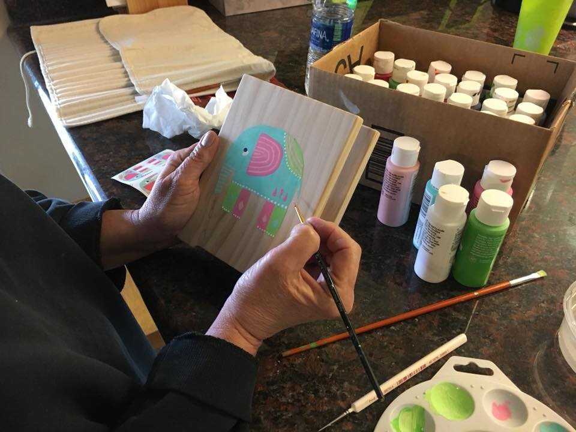

|
|

I love painting! I paint anything and everything; nothing is safe :-) I love seeing my painted items all around the house. I also love giving painted items to friends, as gifts. Over the years I have had requests for “cheerful” art. It seems that my art makes others feel happy, too! I spent several years writing a dissertation about family directed funerals. I balanced the sadness by wearing Lilly Pulitzer colors and prints. I was impressed with Lilly’s quote, “Life is a party, dress for it!” While sitting at a park day (children play while moms talk), I discovered the joy of brush tip markers. I started making cards by coloring vines and flowers, such as the one above. Eventually I tried acrylic paint on wood, and I haven’t stopped painting since! Now that I have retired I can devote more time to painting! I am convinced that every person has wonderful art inside them, just waiting to be expressed! |